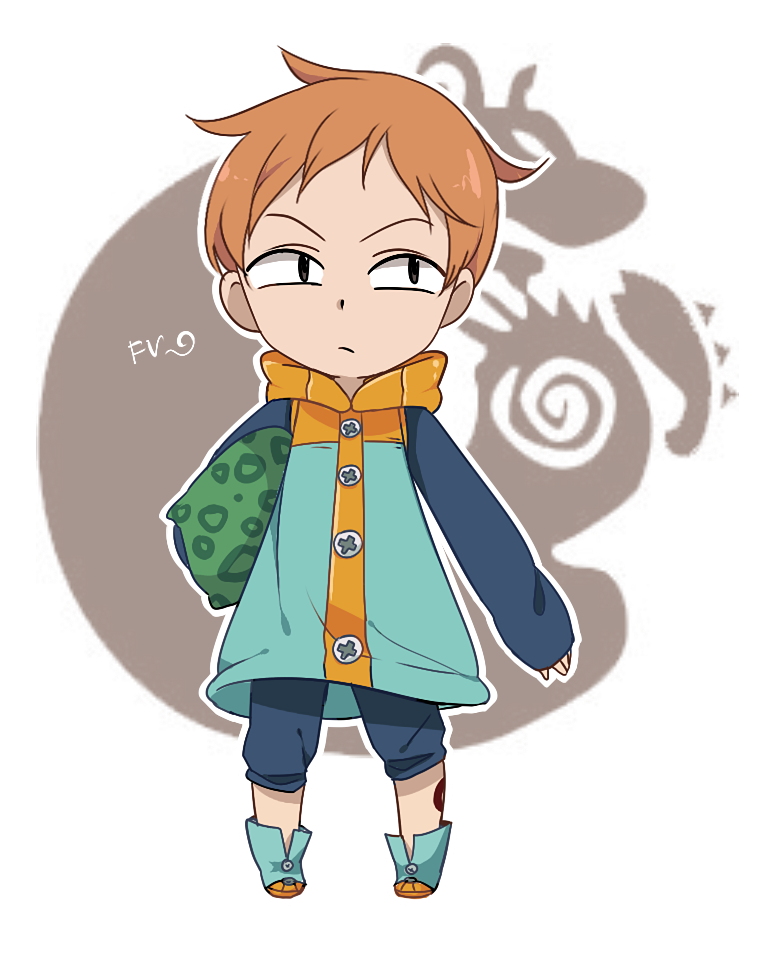

✓ Solicitação: Corresponde a uma solicitação que o BOT fará,
para a qual o visitante deverá escrever uma resposta.
Você pode configurar o tipo de resposta que será aceita,
como texto, número, data, telefone,
✓ Múltipla-escolha: Corresponde a uma questão apresentada com alternativas
para que o visitante escolha uma delas.
O fluxo da conversa será direcionado de acordo
com cada alternativa escolhida pelo visitante.
✓ Exibição de informações: É um tipo de interação onde se cadastra
um conteúdo na forma de texto de múltiplas linhas,
para apresentar informações para o visitante.
Geralmente é utilizada para explicar,
orientar ou divulgar informações.
Pode também exibir um link de internet para o visitante clicar
e obter mais informações
sobre um determinado assunto.